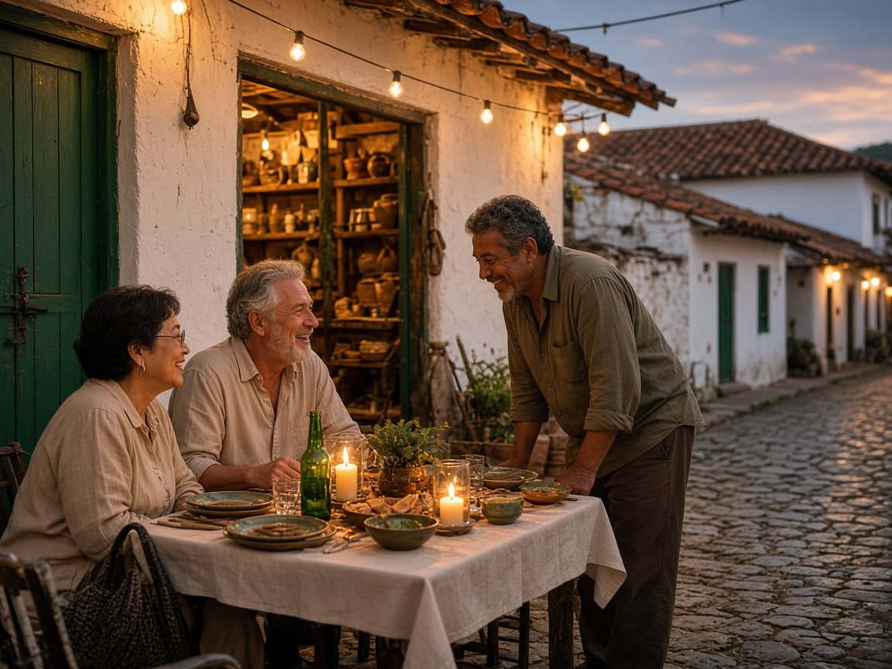

Quedan 4 de 12 cuposBarichara & Chicamocha
Piedra, Fuego y Tertulia
12 díasAltitud cómoda · 1.300 mNivel físico suave
Caminata en bajada por el Camino Real, taller de papel de fique con maestros locales y una cena privada en casa colonial con música andina en vivo.
Salida: 6 de marzo de 20278/12 reservados
Al completar 12 viajeros, la salida se cierra.